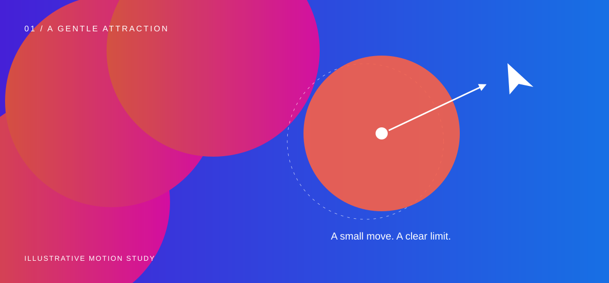

A personal website can be both a place to explore and a place to pause. I wanted the first impression to have energy, and the second to offer something quieter: a sentence worth reading.
This is a sample article for reviewing the reading experience. The shapes, code, and notes below help us look at how different kinds of writing can share one page.
A little room to breathe
The circles began as a simple experiment. Overlap a few warm colors, give each shape its own rhythm, and let the composition sit against a field of blue. The movement should be easy to notice and easy to ignore.
That last part matters. An article isn’t a waiting room for an animation. Readers should be able to start anywhere, follow a link, or spend a few minutes with a paragraph that catches their attention.
Give the page a little personality. Give the words enough space to be themselves.

Giving motion a limit
A little response can make the graphic feel approachable. Too much movement makes it feel as though the page is chasing the reader. I started with three rules:
- Respond only when the pointer is nearby.
- Keep the movement within a small, fixed distance.
- Return gently to the resting position.
One possible distance rule can be written as:
Here, d is the distance to the pointer, R is the response radius, and M caps the pull. This is an illustrative rule, not a requirement for the final animation.
func attraction(distance, radius, maximum float64) float64 {
if radius <= 0 || distance <= 0 {
return 0
}
proximity := math.Max(0, 1 - distance/radius)
return math.Min(maximum, distance*0.35) * proximity
}The important part is the boundary. A limit makes the interaction predictable, even when the composition changes size or moves to another part of the page.
| Interaction | Response | When it rests |
|---|---|---|
| Circle breathing | A small, independent scale cycle | Reduced motion is enabled |
| Pointer attraction | A capped move toward the pointer | The pointer moves away |
| Reading the article | Ordinary document scrolling | The reader sets the pace |
Room for another language
A personal collection doesn’t always stay in one language. Some ideas arrive in English; others feel more natural in Chinese. The layout should make room for both.
让文字有自己的节奏
做一个个人网站，也是在整理自己的思考。我们可以用鲜艳的颜色表达好奇心，也可以留出安静的空间，让一段文字慢慢展开。
有时候，值得记录的并不是一个完整的答案，而是探索途中发现的小问题。把它写下来，下一次回来时，也许就会有新的理解。
Long headings, mixed punctuation, inline code, and links to another section should remain part of the same comfortable reading rhythm.
Knowing when to stop
The graphic opening is an invitation. Once the article begins, the layout has a simpler job: keep the line length comfortable, separate ideas clearly, and stay out of the way.
That gives us a useful test for every new effect: does it help someone find, understand, or enjoy the writing? If the answer is unclear, the page can probably do without it.
There will always be another experiment to try. For now, this is a place to begin.
End of this sample article.
Conversation.
Sample commentsA question, a thought, a different perspective.
No approved comments yet. There’s room for the first thought.
New comments are disabled. Approved comments remain readable.
I like the idea of giving the page a little energy while leaving the reading area quiet. The distance limit makes the interaction easier to understand.
喜欢这种把图形和文字放在一起的尝试。阅读的时候安静一点，反而能让开头的色彩更有记忆点。